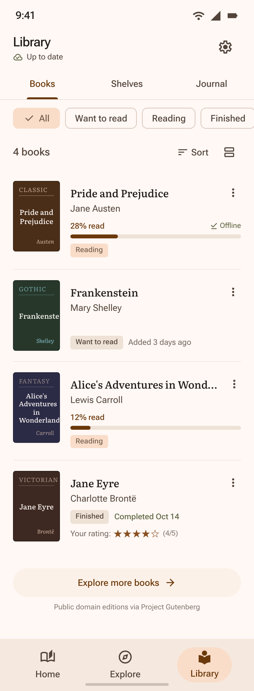

Home
The current book leads. Saved books follow, with routine sync kept compact.


Book Details
The primary action follows availability: Download to read, Start reading, or Continue reading. Saving for later is a separate secondary action.


Library
Reading status, progress, and downloaded text stay distinct. Books and useful filters get the space.



Journal
Entries lead to their detail. Passage navigation appears with a valid passage reference, and creation has one clear entry point.